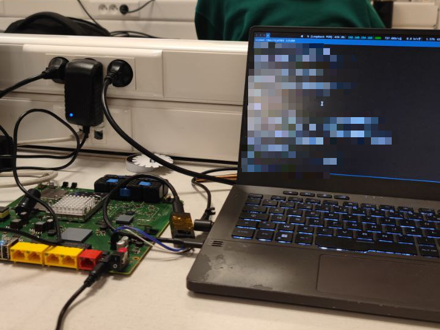

This page documents my personal reverse engineering project focused on an old internet box that is no longer in commercial use. This work is being conducted strictly for learning, technical exploration, and to show you how it could be done by hackers.
It is crucial to understand that this project has no malicious intent whatsoever. It is an exercise in reverse engineering carried out within an ethical and responsible framework.
Should I discover any sensitive or potentially exploitable information regarding the security or operation of the device during my research, I formally commit to immediately notifying the company concerned. I will cooperate closely with them to assess the nature and scope of any such finding and to define, if necessary, the most appropriate course of action to address it securely and responsibly. Furthermore, I will do my best to avoid disclosing the specific name of the company or the device being tested.
This webpage serves solely as a public logbook of my experiments on the hardware of this box. I detail the different steps I have attempted, the results obtained (both successes and failures), as well as the conclusions I have drawn, particularly concerning any security mechanisms potentially implemented by the manufacturer. Thank you for your understanding.
My very first objective in undertaking this reverse engineering project was to attempt to gain shell access to the device. My aim was to delve into the device's operating system, exploring the available commands and options, and understanding the environment accessible with potentially elevated privileges.
To begin this process, I physically disassembled the internet box to examine its internal hardware. Upon a quick inspection of the circuit board, I identified a set of pins that appeared to be a standard debug header, likely implementing the UART (Universal Asynchronous Receiver-Transmitter) or RS232 protocol, commonly used for serial communication and debugging.
To interface with these identified pins, I acquired a CP2102 USB-to-UART converter module. Using this converter and appropriate jumper wires, I connected my computer to the debug header on the box's circuit board, setting the stage to attempt serial communication and hopefully intercept boot messages or gain an interactive shell.

My first objective is to find a way, one way or another, to retrieve the firmware that is running on the box. I believe that if I manage to obtain the firmware, I can then extract and analyze its code. Access to the code potentially allows for the discovery of vulnerabilities or, at the very least, to gain a deep understanding of the system's internal workings and architecture.
Furthermore, and perhaps most importantly for testing flexibility, having the firmware allows me to emulate the entire device. This emulation capability is extremely advantageous because it allows me to conduct my tests and experiments remotely, without needing the physical hardware, making the testing process much more portable and convenient. Beyond simple portability, this emulation capability offers a crucial advantage: it allows me to know the exact state of the box at any given moment.
After spending time experimenting and searching for a method to retrieve the firmware through the box's shell, I unfortunately found no viable way to accomplish this. My attention is now shifting to finding a method to directly read the chip where the firmware is stored on the device's circuit board. The aim is to bypass the operational system and shell entirely and recover the firmware data directly from this storage medium. However, this approach requires acquiring a specialized reader designed for this type of chip, which is the necessary next step before I can attempt to dump the firmware content.
Following the decision to directly read the firmware chip, the next steps involve a detailed physical analysis of the box's motherboard. I will map all chips to identify the one likely storing the firmware, probably a flash memory. Once identified, I will acquire the specific reader needed to connect to this chip and extract its content.